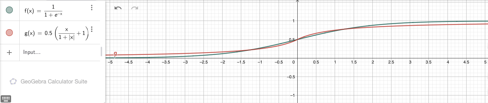
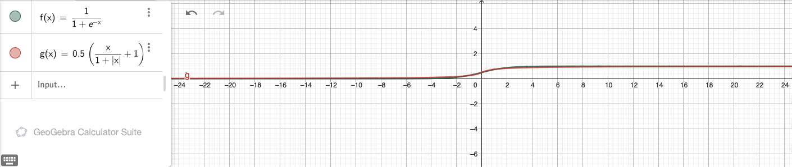
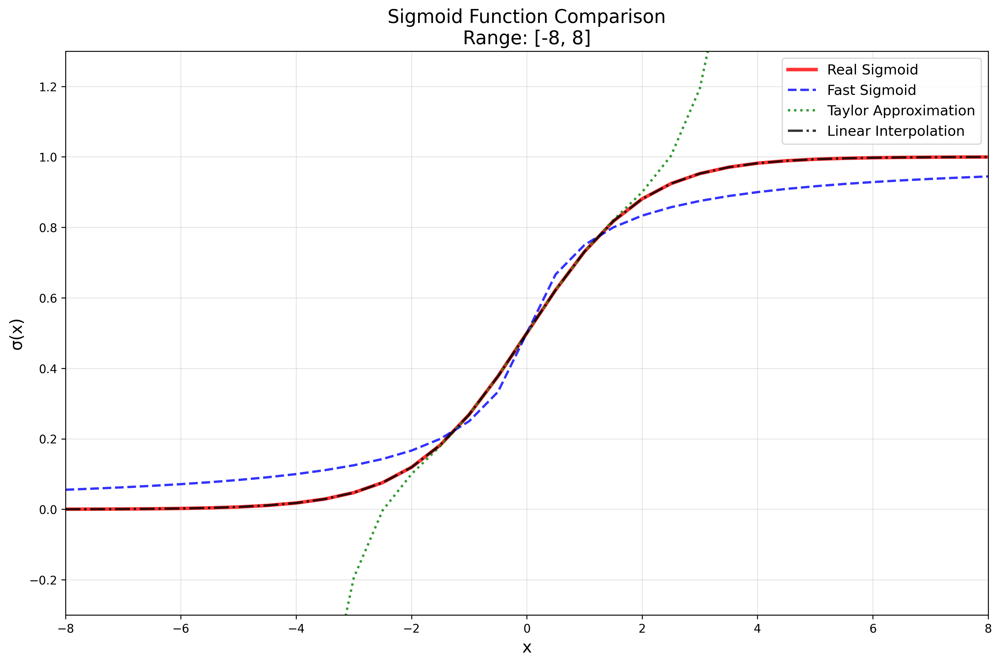

7. Individual Phase
After completing the assigned tasks during the initial weeks of the project, we were granted the opportunity to define our own objectives for the final individual phase. As part of this phase, we were required to propose a pitch and develop a short sketch to present and explore our individual ideas.
7.1 Our Pitch
7.1.1 Roadmap
Unary Primitives (Tensor Processing Primitives, Table 1)
Square
Reciprocal
Increment & Decrement
Binary Primitives (Tensor Processing Primitives, Table 2)
Add & Sub
Mul & Div
Max & Min
Optimizations
Optimize new primitives
Extend current optimizer (Optional): Dimension Fusion + Dimension Reordering
7.2.1 Risk Evaluation
Risks
Incorporation of new primitives
Considering edge cases (division by zero)
Compatibility with our current code - adjustments resulting from this
Time management (considering we only have two weeks)
Rewards / Outcomes
Regarding new primitives: enhanced / diversified compiler
Regarding optimization: high throughput over the board
7.2 Sketch
In this phase, we aim to extend our tensor compiler by implementing new primitives and subsequently optimizing their performance. Currently, the compiler is rather limited, as supports only a handful of processing primitives. To handle more diverse machine learning workloads, we plan to add selected unary and binary primitives, as presented in Tensor Processing Primitives.
We will begin by adding a few unary primitives, specifically Square, Reciprocal, and Increment & Decrement. Since our compiler does not yet support any binary primitives, our next step will be to implement Add & Sub, Mul & Div and Max & Min.
Regarding the implementation, we anticipate that some primitives may be more challenging than others. For example, we need to account for edge cases, such as division by zero in the Reciprocal and Div operations. However, as we have already developed some unary primitives, integrating the new ones into our current framework should be relatively straightfoward.
The situation is slightly different for the binary primitives. We do not have a direct starting point for these, but our plan is to integrate them similar to the existing main primitives. That said, as this approach is still untested, we may encounter compatibility issues that will need to be addressed along the way.
Importantly, we aim not only to integrate these implementations into our framework but also to achieve a high performance. Therefore, we plan to optimize these primitives as much as possible.
Given, that this is a relatively short-term project, we will need to assess our progress as we go. If time allows, we would also like to further optimize our tensor operations by implementing dimension fusion and dimension reordering. Since we already have some other optimizations in place, integrating these should not result in major issues, although we do expect some challenges along the way.
7.3 Progress of Week 1
As suggested in our sketch, our plan was to implement the new functionalities in the following order:
Unary Primitives
Binary Primitives
7.3.1 Unary Primitives
For the unary primitives we were looking at Square, Reciprocal, Increment and Decrement operations.
7.3.1.1 Square Primitive
Our initial approach was to use instructions that we already had implemented.
Therefore, we started by using the FMLA instruction.
However, we quickly realized that the performance from multiplying two values and adding a zero value to it was not great. We decided to implement new instructions which would increase the performance of our code:
FMUL (vector) instruction generationconstexpr uint32_t fmulVec(simd_fp_t reg_dest,
simd_fp_t reg_src1,
simd_fp_t reg_src2,
arr_spec_t arr_spec)
{
if (arr_spec != arr_spec_t::s2 &&
arr_spec != arr_spec_t::s4 &&
arr_spec != arr_spec_t::d2)
{
throw std::invalid_argument("Invalid arrangement specifier");
}
uint32_t l_ins = 0x2E20DC00;
// set destination register id
l_ins |= (reg_dest & 0x1f);
// set first source register id
l_ins |= (reg_src1 & 0x1f) << 5;
// set second source register id
l_ins |= (reg_src2 & 0x1f) << 16;
// set arrangement specifier
l_ins |= (arr_spec & 0x40400000);
return l_ins;
}
This FMUL (vector) allowed us to multiply several elements simultaneously.
For cases where we needed to multiply single elements (arr_spec_t::), we implemented the following instruction:
FMUL (scalar) instruction generationconstexpr uint32_t fmulScalar(simd_fp_t reg_dest,
simd_fp_t reg_src1,
simd_fp_t reg_src2,
neon_size_spec_t size_spec)
{
if (size_spec != neon_size_spec_t::s &&
size_spec != neon_size_spec_t::d)
{
throw std::invalid_argument("Invalid size specifier");
}
uint32_t l_ins = 0x1E200800;
// set destination register id
l_ins |= (reg_dest & 0x1f);
// set first source register id
l_ins |= (reg_src1 & 0x1f) << 5;
// set second source register id
l_ins |= (reg_src2 & 0x1f) << 16;
// set size specifier
l_ins |= (size_spec & 0x3) << 22;
return l_ins;
}
These instructions allowed us to develop a kernel for the square primitive.
The approach for constructing this kernel was similar to the zero, ReLU or identity kernel.
int mLoopIterations = m / 16;
int mLoopRemainder = m % 16;
As a first step, we calculated how many iterations we had to perform. With this number, we were then able to execute our main kernel accordingly:
ldp(v0, v1, x8, 0, q)
ldp(v2, v3, x8, 32, q)
fmulVec(v4, v0, v0, s4)
fmulVec(v5, v1, v1, s4)
fmulVec(v6, v2, v2, s4)
fmulVec(v7, v3, v3, s4)
stp(v4, v5, x9, 0, q)
stp(v6, v7, x9, 32, q)
That means, in our main loop we would calculate 16 squared elements in one iteration. If there were no iterations left, we had to check if there would be a remainder:
case 8:
kernel.add_instr({
ldp(v0, v1, x8, 0, q),
fmulVec(v2, v0, v0, s4),
fmulVec(v3, v1, v1, s4),
stp(v2, v3, x9, 0, q)
});
break;
case 9:
kernel.add_instr({
ldp(v0, v1, x8, 0, q),
fmulVec(v2, v0, v0, s4),
fmulVec(v3, v1, v1, s4),
stp(v2, v3, x9, 0, q),
ldr(v4, x8, 32, s),
fmulScalar(v5, v4, v4, s),
str(v5, x9, 32, s)
});
break;
We had to calculate the remainder for all of our 15 cases, in order to guarantee a correctly functioning kernel. After implementing the kernel, we also verified its correctness for different configurations:
uint32_t M = GENERATE(1, 2, 3, 4, 5, 6, 7, 8, 9, 10, 11, 12, 13, 14, 15, 16);
uint32_t N = GENERATE(1, 2, 3, 4, 5, 6, 7, 8, 9, 10, 11, 12, 13, 14, 15, 16);
test_square_primitive(M, N);
In order to be universally usable, we also implemented a transposition square kernel.
The implementation for this kernel was simple, as we could reuse the ReLU kernel and replace the ReLU operation with the square operation:
// Load 4x4 block of A (input matrix)
ldr(v0, x7, 0, q)
add(x7, x7, x2, 0, 0)
ldr(v1, x7, 0, q)
add(x7, x7, x2, 0, 0)
ldr(v2, x7, 0, q)
add(x7, x7, x2, 0, 0)
ldr(v3, x7, 0, q)
// Square values
fmulVec(v0, v0, v0, s4)
fmulVec(v1, v1, v1, s4)
fmulVec(v2, v2, v2, s4)
fmulVec(v3, v3, v3, s4)
// Transpose 4x4 block
// TRN
trn1(v4, v0, v2, s4)
trn1(v5, v1, v3, s4)
trn2(v6, v0, v2, s4)
trn2(v7, v1, v3, s4)
// ZIP
zip1(v8, v4, v5, s4)
zip1(v9, v6, v7, s4)
zip2(v10, v4, v5, s4)
zip2(v11, v6, v7, s4)
// Store 4x4 Block of B
str(v8, x8, 0, q)
add(x8, x8, x3, 0, 0)
str(v9, x8, 0, q)
add(x8, x8, x3, 0, 0)
str(v10, x8, 0, q)
add(x8, x8, x3, 0, 0)
str(v11, x8, 0, q)
This meant that we were limited to a 4x4 kernel, which might reduce our overall performance.
To combat this, we increased the initial dimension size from M=8 to M=16 in the normal square kernel.
For the transposition kernel however, we did not implement any further optimizations.
7.3.1.2 Reciprocal Primitive
The next primitive we implemented was the reciprocal function, which computes 1.0 / x for all input values x.
For this, the A64 ISA already provides two instructions FRECPE and FRECPS. FRECPE is the floating point reciprocal compute estimate instruction, which computes a first estimate of 1.0 / x. However, this estimate is generally not good enough for 32-bit floating point precision. To solve this, we utilized FRECPS (floating point reciprocal compute step) iteratively, which improved the accuracy of the previously calculated estimate. We decided to perform only one step, as this already satisfied the 32-bit floating point precision.
FRECPE instruction generationconstexpr uint32_t frecpeVec(simd_fp_t reg_dest,
simd_fp_t reg_src,
arr_spec_t arr_spec)
{
u_int32_t l_ins = 0xEA1D800;
// set destination register id - Rd
l_ins |= (reg_dest & 0x1f);
// set source register id - Rn
l_ins |= (reg_src & 0x1f) << 5;
// set arrangement specifier
l_ins |= (arr_spec & 0x40400000);
return l_ins;
}
constexpr uint32_t frecpeScalar(simd_fp_t reg_dest,
simd_fp_t reg_src,
size_spec_t size_spec)
{
if (size_spec != neon_size_spec_t::s &&
size_spec != neon_size_spec_t::d)
{
throw std::invalid_argument("Invalid size specifier");
}
u_int32_t l_ins = 0x5EA1D800;
// set destination register id - Rd
l_ins |= (reg_dest & 0x1f);
// set source register id - Rn
l_ins |= (reg_src & 0x1f) << 5;
// set size specifier
l_ins |= (size_spec & 0x1) << 22;
return l_ins;
}
FRECPS instruction generationconstexpr uint32_t frecpsVec(simd_fp_t reg_dest,
simd_fp_t reg_src1,
simd_fp_t reg_src2,
arr_spec_t arr_spec)
{
u_int32_t l_ins = 0xE20FC00;
// set destination register id - Rd
l_ins |= (reg_dest & 0x1f);
// set first source register id
l_ins |= (reg_src1 & 0x1f) << 5;
// set second source register id
l_ins |= (reg_src2 & 0x1f) << 16;
// set size specifier
l_ins |= (arr_spec & 0x40400000);
return l_ins;
}
constexpr uint32_t frecpsScalar(simd_fp_t reg_dest,
simd_fp_t reg_src1,
simd_fp_t reg_src2,
size_spec_t size_spec)
{
if (size_spec != neon_size_spec_t::s &&
size_spec != neon_size_spec_t::d)
{
throw std::invalid_argument("Invalid size specifier");
}
u_int32_t l_ins = 0x5E20FC00;
// set destination register id - Rd
l_ins |= (reg_dest & 0x1f);
// set first source register id
l_ins |= (reg_src1 & 0x1f) << 5;
// set second source register id
l_ins |= (reg_src2 & 0x1f) << 16;
// set size specifier
l_ins |= (size_spec & 0x1) << 22;
return l_ins;
}
To compute the reciprocal, we also needed the FMUL instruction which we implemented in the previous section. A full reciprocal computation looks like this:
frecpe v0.4s, v1.4s // Estimate reciprocal of v1 and save to v0
frecps v2.4s, v1.4s, v0.4s // Refine reciprocal
fmul v0.4s, v0.4s, v2.4s // Apply refinement -> v0 now has better estimate
With these instructions, we began implementing the new kernel. Structurally it is identical to the square primitive. We simply replaced the calculations with the new instructions:
kernel.add_instr({
// load 16 elements from A
ldp(v0, v1, x8, 0, q),
ldp(v2, v3, x8, 32, q),
frecpeVec(v4, v0, s4),
frecpsVec(v10, v0, v4, s4),
fmulVec(v4, v4, v10, s4),
frecpeVec(v5, v1, s4),
frecpsVec(v10, v1, v5, s4),
fmulVec(v5, v5, v10, s4),
frecpeVec(v6, v2, s4),
frecpsVec(v10, v2, v6, s4),
fmulVec(v6, v6, v10, s4),
frecpeVec(v7, v3, s4),
frecpsVec(v10, v3, v7, s4),
fmulVec(v7, v7, v10, s4),
// store 16 elements to B
stp(v4, v5, x9, 0, q),
stp(v6, v7, x9, 32, q),
// jump by 16 rows
add(x8, x8, 16*4, 0),
add(x9, x9, 16*4, 0),
// decrement m loop counter
sub(x7, x7, 1, 0),
});
kernel.add_instr({
// working pointer for A and B
mov(x7, x4)
mov(x8, x5)
// Load 4x4 block of A (input matrix)
ldr(v0, x7, 0, q)
add(x7, x7, x2, 0, 0)
ldr(v1, x7, 0, q)
add(x7, x7, x2, 0, 0)
ldr(v2, x7, 0, q)
add(x7, x7, x2, 0, 0)
ldr(v3, x7, 0, q)
frecpeVec(v16, v0, s4)
frecpsVec(v17, v0, v16, s4)
fmulVec(v0, v16, v17, s4)
frecpeVec(v16, v1, s4)
frecpsVec(v17, v1, v16, s4)
fmulVec(v1, v16, v17, s4)
frecpeVec(v16, v2, s4)
frecpsVec(v17, v2, v16, s4)
fmulVec(v2, v16, v17, s4)
frecpeVec(v16, v3, s4)
frecpsVec(v17, v3, v16, s4)
fmulVec(v3, v16, v17, s4)
// Transpose 4x4 block
// TRN
trn1(v4, v0, v2, s4)
trn1(v5, v1, v3, s4)
trn2(v6, v0, v2, s4)
trn2(v7, v1, v3, s4)
// ZIP
zip1(v8, v4, v5, s4)
zip1(v9, v6, v7, s4)
zip2(v10, v4, v5, s4)
zip2(v11, v6, v7, s4)
// Store 4x4 Block of B
str(v8, x8, 0, q)
add(x8, x8, x3, 0, 0)
str(v9, x8, 0, q)
add(x8, x8, x3, 0, 0)
str(v10, x8, 0, q)
add(x8, x8, x3, 0, 0)
str(v11, x8, 0, q)
// Matrix A next 4 rows
add(x4, x4, x25, 0, 0)
// Matrix B next 4 columns
add(x5, x5, x27, 0, 0)
// decrement m loop counter
sub(x6, x6, 1, 0)
});
7.3.1.3 Increment and Decrement Primitive
The last unary primitives that we wanted to implement were the increment and decrement operations.
Similar to the other primitives, we had to first implement a few new instructions.
Instructions that were directly needed for these primitives are FADD and FSUB.
To fully utilize these instructions, we were implementing both a scalar and a vector version for these instructions:
FADD instruction generationconstexpr uint32_t faddVec(simd_fp_t reg_dest,
simd_fp_t reg_src1,
simd_fp_t reg_src2,
arr_spec_t arr_spec)
{
if (arr_spec != arr_spec_t::s2 &&
arr_spec != arr_spec_t::s4 &&
arr_spec != arr_spec_t::d2)
{
throw std::invalid_argument("Invalid arrangement specifier");
}
uint32_t l_ins = 0xE20D400;
// set destination register id
l_ins |= (reg_dest & 0x1f);
// set first source register id
l_ins |= (reg_src1 & 0x1f) << 5;
// set second source register id
l_ins |= (reg_src2 & 0x1f) << 16;
// set arrangement specifier
l_ins |= (arr_spec & 0x40400000);
return l_ins;
}
constexpr uint32_t faddScalar(simd_fp_t reg_dest,
simd_fp_t reg_src1,
simd_fp_t reg_src2,
neon_size_spec_t size_spec)
{
if (size_spec != neon_size_spec_t::s &&
size_spec != neon_size_spec_t::d)
{
throw std::invalid_argument("Invalid size specifier");
}
uint32_t l_ins = 0x1E202800;
// set destination register id
l_ins |= (reg_dest & 0x1f);
// set first source register id
l_ins |= (reg_src1 & 0x1f) << 5;
// set second source register id
l_ins |= (reg_src2 & 0x1f) << 16;
// set size specifier
l_ins |= (size_spec & 0x3) << 22;
return l_ins;
}
Beside these instructions, we needed to move the value 1 into a Neon register.
That meant, we had to also implement the FMOV instruction.
Implementing the FMOV instruction has been slightly different to those of other implementations.
The main reason for this special behavior is the split of the 8-bit immediate into 1 signed bit, a 3-bit exponent and a 4-bit precision part.
This unique characteristic changes the use of these 8-bits slightly.
For example, we have looked at different scenarios for moving a floating point value:
FP-Number |
Bit-18 |
Bit-17 |
Bit-16 |
Bit-9 |
Bit-8 |
Bit-7 |
Bit-6 |
Bit-5 |
|---|---|---|---|---|---|---|---|---|
1.0f |
0 |
1 |
1 |
1 |
0 |
0 |
0 |
0 |
2.0f |
0 |
0 |
0 |
0 |
0 |
0 |
0 |
0 |
3.0f |
0 |
0 |
0 |
0 |
1 |
0 |
0 |
0 |
7.0f |
0 |
0 |
0 |
1 |
1 |
1 |
0 |
0 |
18.0f |
0 |
0 |
1 |
1 |
0 |
0 |
1 |
0 |
31.0f |
0 |
0 |
1 |
1 |
1 |
1 |
1 |
1 |
-31.0f |
1 |
0 |
1 |
1 |
1 |
1 |
1 |
1 |
Looking at these examples we were able to find some special cases (e.g. 1), but also patterns, that we were trying to apply to our implementation:
FMOV (vector, immediate) instruction generationconstexpr uint32_t fmovVec(simd_fp_t reg_dest,
int32_t imm8,
arr_spec_t arr_spec)
{
if (arr_spec != arr_spec_t::s2 &&
arr_spec != arr_spec_t::s4 &&
arr_spec != arr_spec_t::d2)
{
throw std::invalid_argument("Invalid arrangement specifier");
}
int32_t l_ins = 0xF00F400;
// set destination register id
l_ins |= (reg_dest & 0x1f);
if (imm8 > 31 || imm8 < -31)
{
throw std::invalid_argument("Invalid immediate (allowed range: -31, 31)");
}
if (imm8 < 0)
{
l_ins |= (0x1) << 18;
imm8 *= -1;
}
// immediate bits
if (imm8 == 1)
{
l_ins |= (0x3) << 16;
l_ins |= (0x1) << 9;
}
else if (imm8 == 2)
{
}
else if (imm8 == 3)
{
l_ins |= (0x1) << 8;
}
else if (imm8 < 8)
{
l_ins |= (imm8 & 0x7) << 7;
}
else
{
l_ins |= (0x1) << 16;
if (imm8 > 8 && imm8 < 16)
{
l_ins |= (imm8 & 0x7) << 6;
}
else if (imm8 > 16)
{
l_ins |= (imm8 & 0x1f) << 5;
}
}
// set arrangement specifier
if (arr_spec == arr_spec_t::s4)
{
l_ins |= (0x1) << 30;
}
else if (arr_spec == arr_spec_t::d2)
{
l_ins |= (0x1) << 29;
l_ins |= (0x1) << 30;
}
return l_ins;
}
In practice, we would need the FMOV instruction to transfer the 1.0f into a vector, in order to be able to execute vector addition and subtraction operations.
After implementing the instructions we simply took our square kernel and replaced all multiplication operations with a FADD or a FSUB operation:
// Set register with value 1
fmovVec(v19, 1, s4)
...
// load 16 elements from A
ldp(v0, v1, x8, 0, q)
ldp(v2, v3, x8, 32, q)
faddVec(v4, v0, v19, s4)
faddVec(v5, v1, v19, s4)
faddVec(v6, v2, v19, s4)
faddVec(v7, v3, v19, s4)
// store 16 elements to B
stp(v4, v5, x9, 0, q)
stp(v6, v7, x9, 32, q)
// jump by 16 rows
add(x8, x8, 16*4, 0)
add(x9, x9, 16*4, 0)
// decrement m loop counter
sub(x7, x7, 1, 0)
After implementing both the increment and decrement kernel, we also implemented their transposed versions.
7.3.2 Binary Primitives
Our second step to get a diverse machine learning compiler was to introduce binary operations. In order to incorporate these operations into our current framework, our first step was to implement different kernels. We implemented the kernels in the following order:
Add and Sub
Mul and Div
Max and Min
7.3.2.1 Add and Sub Primitive
The first binary primitive which we implemented was the element-wise addition and the subtraction of two matrices.
Fortunately, the required instructions FADD and FSUB were already implemented in 7.3.1.3 Increment and Decrement Primitive.
Since the subtraction kernel is fundamentally the same as the addition kernel, we will only consider the addition kernel in this section.
Similar to previous kernels, we first implemented a main loop for 16 elements in the M dimension and 1 element in the N dimension.
kernel.add_label("m_16_loop");
kernel.add_instr({
// load 16 elements from A
simd_fp::ldp(v0, v1, x11, 0, q),
simd_fp::ldp(v2, v3, x11, 32, q),
// load 16 elements from B
simd_fp::ldp(v4, v5, x12, 0, q),
simd_fp::ldp(v6, v7, x12, 32, q),
// compute C = A + B
simd_fp::faddVec(v8, v0, v4, s4),
simd_fp::faddVec(v9, v1, v5, s4),
simd_fp::faddVec(v10, v2, v6, s4),
simd_fp::faddVec(v11, v3, v7, s4),
// store 16 elements to C
simd_fp::stp(v8, v9, x13, 0, q),
simd_fp::stp(v10, v11, x13, 32, q),
// jump by 16 rows
base::add(x11, x11, 16*4, 0),
base::add(x12, x12, 16*4, 0),
base::add(x13, x13, 16*4, 0),
// decrement m loop counter
base::sub(x10, x10, 1, 0),
});
// check if loop counter is zero
kernel.add_instr(base::cbnz(x10, -kernel.getInstrCountFromLabel("m_16_loop") * 4));
If there is a remainder that is smaller than 16, we execute special cases, for example:
if (mLoopRemainder > 0)
{
switch (mLoopRemainder)
{
case 1:
kernel.add_instr({
// 1 element
simd_fp::ldr(v0, x11, 0, s),
simd_fp::ldr(v1, x12, 0, s),
simd_fp::faddScalar(v2, v0, v1, s),
simd_fp::str(v2, x13, 0, s)
});
break;
case 2:
kernel.add_instr({
// 2 elements
simd_fp::ldr(v0, x11, 0, d),
simd_fp::ldr(v1, x12, 0, d),
simd_fp::faddVec(v2, v0, v1, s2),
simd_fp::str(v2, x13, 0, d)
});
break;
case 3:
kernel.add_instr({
// 2 elements
simd_fp::ldr(v0, x11, 0, d),
simd_fp::ldr(v1, x12, 0, d),
simd_fp::faddVec(v2, v0, v1, s2),
simd_fp::str(v2, x13, 0, d),
// 1 element
simd_fp::ldr(v3, x11, 2*4, s),
simd_fp::ldr(v4, x12, 2*4, s),
simd_fp::faddScalar(v5, v3, v4, s),
simd_fp::str(v5, x13, 2*4, s)
});
break;
case 4:
kernel.add_instr({
// 4 elements
simd_fp::ldr(v0, x11, 0, q),
simd_fp::ldr(v1, x12, 0, q),
simd_fp::faddVec(v2, v0, v1, s4),
simd_fp::str(v2, x13, 0, q)
});
break;
7.3.2.2 Mul and Div Primitive
As we had already implemented a GEMM kernel, we decided to implement a simple Mul and Div kernel, that would support element-wise calculations.
Conceptually, implementing a multiplication that is not element-wise would be simply a matrix multiplication and implementing a division of two matrices (not element-wise) could be achieved by taking the reciprocal of one of the inputs and multiplying it by the second input.
The implementation for the element-wise multiplication and division was again straight forward, as we could take our ADD and SUB kernels,
and replace the FADD and FSUB operations with FMUL and FDIV respectively:
// load 16 elements from A
ldp(v0, v1, x11, 0, q)
ldp(v2, v3, x11, 32, q)
// load 16 elements from B
ldp(v4, v5, x12, 0, q)
ldp(v6, v7, x12, 32, q)
// compute C = A * B
fmulVec(v8, v0, v4, s4)
fmulVec(v9, v1, v5, s4)
fmulVec(v10, v2, v6, s4)
fmulVec(v11, v3, v7, s4)
// store 16 elements to C
stp(v8, v9, x13, 0, q)
stp(v10, v11, x13, 32, q)
// jump by 16 rows
add(x11, x11, 16*4, 0)
add(x12, x12, 16*4, 0)
add(x13, x13, 16*4, 0)
// decrement m loop counter
sub(x10, x10, 1, 0)
7.3.2.3 Max and Min Primitive
As we had already implemented the FMAX instruction for our 4.2.3 ReLU Primitive, we only needed to implement the FMIN instruction generation:
FMIN instruction generationconstexpr uint32_t fminScalar(simd_fp_t reg_dest,
simd_fp_t reg_src1,
simd_fp_t reg_src2,
neon_size_spec_t size_spec)
{
if (size_spec != neon_size_spec_t::s && size_spec != neon_size_spec_t::d)
{
throw std::invalid_argument("Invalid size specifier");
}
u_int32_t l_ins = 0x1E205800;
// set destination register id - Rd
l_ins |= (reg_dest & 0x1f);
// set first source register id - Rn
l_ins |= (reg_src1 & 0x1f) << 5;
// set second source register id - Rm
l_ins |= (reg_src2 & 0x1f) << 16;
// set neon size specifier - size_spec
l_ins |= size_spec << 22;
return l_ins;
}
constexpr uint32_t fminVec(simd_fp_t reg_dest,
simd_fp_t reg_src1,
simd_fp_t reg_src2,
arr_spec_t arr_spec)
{
if (arr_spec != arr_spec_t::s2 && arr_spec != arr_spec_t::s4 &&
arr_spec != arr_spec_t::d2)
{
throw std::invalid_argument("Invalid arrangement specifier");
}
u_int32_t l_ins = 0xEA0F400;
// set destination register id - Rd
l_ins |= (reg_dest & 0x1f);
// set first source register id - Rn
l_ins |= (reg_src1 & 0x1f) << 5;
// set second source register id - Rm
l_ins |= (reg_src2 & 0x1f) << 16;
// set arrangement specifier - arr_spec
l_ins |= arr_spec;
return l_ins;
}
The final primitive is almost identical to the previous kernels, except that we now make calls to the FMIN and FMAX instructions:
kernel.add_label("m_16_loop");
kernel.add_instr({
// load 16 elements from A
simd_fp::ldp(v0, v1, x11, 0, q),
simd_fp::ldp(v2, v3, x11, 32, q),
// load 16 elements from B
simd_fp::ldp(v4, v5, x12, 0, q),
simd_fp::ldp(v6, v7, x12, 32, q),
// compute C = max(A, B)
simd_fp::fmaxVec(v8, v0, v4, s4),
simd_fp::fmaxVec(v9, v1, v5, s4),
simd_fp::fmaxVec(v10, v2, v6, s4),
simd_fp::fmaxVec(v11, v3, v7, s4),
// store 16 elements to C
simd_fp::stp(v8, v9, x13, 0, q),
simd_fp::stp(v10, v11, x13, 32, q),
// jump by 16 rows
base::add(x11, x11, 16*4, 0),
base::add(x12, x12, 16*4, 0),
base::add(x13, x13, 16*4, 0),
// decrement m loop counter
base::sub(x10, x10, 1, 0),
});
// check if loop counter is zero
kernel.add_instr(base::cbnz(x10, -kernel.getInstrCountFromLabel("m_16_loop") * 4));
For the Min primitive, all fmaxVec and fmaxScalar calls were replaced with the respective calls to fmin.
7.3.3 Integration in Framework
After implementing our unary and binary kernels, we needed to integrate them into our TensorOperation backend. We started by adjusting our allowed main primitives, and our first and last touches.
/////////////////////////////////////////////////////////////////////
// Check allowed primitive types
/////////////////////////////////////////////////////////////////////
std::vector<ptype_t> allowed_first_touch_types = {
ptype_t::none,
ptype_t::zero,
ptype_t::relu,
ptype_t::square,
ptype_t::reciprocal,
ptype_t::increment,
ptype_t::decrement
};
std::vector<ptype_t> allowed_main_types = {
ptype_t::none,
ptype_t::identity,
ptype_t::brgemm,
ptype_t::gemm,
ptype_t::add,
ptype_t::sub,
ptype_t::mul,
ptype_t::div,
ptype_t::min,
ptype_t::max
};
std::vector<ptype_t> allowed_last_touch_types = {
ptype_t::none,
ptype_t::relu,
ptype_t::square,
ptype_t::reciprocal,
ptype_t::increment,
ptype_t::decrement
};
As we had already implemented our Unary endpoint, which connects the unary primitives to the TensorOperation, this was all we had to do for these primitives.
For the Binary primitives the situation was slightly different. First we had to set up our binary primitives.
We did that by implementing a Binary endpoint, which makes calls the new binary primitives based on the input parameters:
switch (ptype)
{
case ptype_t::add:
if (0 == trans_c)
{
mini_jit::kernels::binary::add(*m_kernel, m, n);
}
else if (1 == trans_c)
{
std::cout << "Transposition for add primitive is not supported" << std::endl;
return error_t::operation_not_supported;
}
break;
case ptype_t::sub:
if (0 == trans_c)
{
mini_jit::kernels::binary::sub(*m_kernel, m, n);
}
else if (1 == trans_c)
{
std::cout << "Transposition for sub primitive is not supported" << std::endl;
return error_t::operation_not_supported;
}
break;
case ptype_t::mul:
if (0 == trans_c)
{
mini_jit::kernels::binary::mul(*m_kernel, m, n);
}
else if (1 == trans_c)
{
std::cout << "Transposition for mul primitive is not supported" << std::endl;
return error_t::operation_not_supported;
}
break;
case ptype_t::div:
if (0 == trans_c)
{
mini_jit::kernels::binary::div(*m_kernel, m, n);
}
else if (1 == trans_c)
{
std::cout << "Transposition for div primitive is not supported" << std::endl;
return error_t::operation_not_supported;
}
break;
case ptype_t::min:
if (0 == trans_c)
{
mini_jit::kernels::binary::min(*m_kernel, m, n);
}
else if (1 == trans_c)
{
std::cout << "Transposition for min primitive is not supported" << std::endl;
return error_t::operation_not_supported;
}
break;
case ptype_t::max:
if (0 == trans_c)
{
mini_jit::kernels::binary::max(*m_kernel, m, n);
}
else if (1 == trans_c)
{
std::cout << "Transposition for max primitive is not supported" << std::endl;
return error_t::operation_not_supported;
}
break;
default:
std::cout << "Invalid primitive type" << std::endl;
return error_t::wrong_ptype;
}
Inside our TensorOperation, we now also check if there are exactly two primitive dimensions for the new binary primitives:
else if (prim_main == ptype_t::add || prim_main == ptype_t::sub ||
prim_main == ptype_t::mul || prim_main == ptype_t::div ||
prim_main == ptype_t::min || prim_main == ptype_t::max)
{
if (prim_count != 2)
{
return error_t::wrong_exec_type;
}
}
Next, we call the generate function of our Binary endpoint:
else if (prim_main == ptype_t::add || prim_main == ptype_t::sub ||
prim_main == ptype_t::mul || prim_main == ptype_t::div ||
prim_main == ptype_t::min || prim_main == ptype_t::max)
{
m_binary_main.generate(m_dim_sizes[m_dim_id_prim_M],
m_dim_sizes[m_dim_id_prim_N],
0,
dtype,
prim_main);
m_kernel_binary_main = m_binary_main.get_kernel();
}
And lastly, we just need to execute the generated binary kernels:
else if (m_kernel_main_type == ptype_t::add || m_kernel_main_type == ptype_t::sub ||
m_kernel_main_type == ptype_t::mul || m_kernel_main_type == ptype_t::div ||
m_kernel_main_type == ptype_t::min || m_kernel_main_type == ptype_t::max)
{
m_kernel_binary_main(ptr_in0,
ptr_in1,
ptr_out,
ldA,
ldB,
ldC);
}
As for the new unary primitives, no major changes needed to be done.
Our TensorOperation backend already supported unary operations such as zero and relu, so simply extending it with the new primitives was a trivial task.
7.4 Progress of Week 2
7.4.1 Optimizations
The first task on our TODO list was to improve our IR Optimizer. Specifically, it did not yet have the capability of fusing dimensions.
Furthermore, the previous implementation for splitting dimensions was suboptimal in some cases. We introduced a new parameter min_kernel_size
which specifies the minimum size a dimension should have. If a dimension with a smaller size is found, the optimizer will try to fuse it with
another dimension. Additionally, this minimum kernel size is now also taken into account during the splitting of dimensions, where a split is only
performed if both new dimensions are at least of size min_kernel_size.
To read more about this topic, please refer to the detailed chapter 5.5.4 Dimension Fusion.
The second optimization we applied was in some unary kernels that support transposition. Previously, we always performed the respective unary operation before transposing. In some cases however, it is more efficient to perform the respective operation after transposing, because of a better fitting memory layout. To illustrate this, we will look at the following example of the reciprocal with transposition kernel:
void mini_jit::kernels::unary::internal::reciprocalM1N4( mini_jit::Kernel &kernel )
{
kernel.add_instr({
// working pointer for A and B
mov(x7, x4),
mov(x8, x5),
// Load 1x4 block of A (input matrix)
ldr(v0, x7, 0, s),
add(x7, x7, x2, 0, 0),
ldr(v1, x7, 0, s),
add(x7, x7, x2, 0, 0),
ldr(v2, x7, 0, s),
add(x7, x7, x2, 0, 0),
ldr(v3, x7, 0, s),
frecpeScalar(v16, v0, s),
frecpsScalar(v17, v0, v16, s),
fmulScalar(v0, v16, v17, s),
frecpeScalar(v16, v1, s),
frecpsScalar(v17, v1, v16, s),
fmulScalar(v1, v16, v17, s),
frecpeScalar(v16, v2, s),
frecpsScalar(v17, v2, v16, s),
fmulScalar(v2, v16, v17, s),
frecpeScalar(v16, v3, s),
frecpsScalar(v17, v3, v16, s),
fmulScalar(v3, v16, v17, s),
// Transpose 1x4 block
// TRN
trn1(v4, v0, v2, s2),
trn1(v5, v1, v3, s2),
// ZIP
zip1(v6, v4, v5, s4),
// Store 1x4 Block of B
str(v6, x8, 0, q)
});
}
void mini_jit::kernels::unary::internal::reciprocalM1N4( mini_jit::Kernel &kernel )
{
kernel.add_instr({
// working pointer for A and B
mov(x7, x4),
mov(x8, x5),
// Load 1x4 block of A (input matrix)
ldr(v0, x7, 0, s),
add(x7, x7, x2, 0, 0),
ldr(v1, x7, 0, s),
add(x7, x7, x2, 0, 0),
ldr(v2, x7, 0, s),
add(x7, x7, x2, 0, 0),
ldr(v3, x7, 0, s),
// Transpose 1x4 block
// TRN
trn1(v4, v0, v2, s2),
trn1(v5, v1, v3, s2),
// ZIP
zip1(v6, v4, v5, s4),
frecpeVec(v16, v6, s4),
frecpsVec(v17, v6, v16, s4),
fmulVec(v6, v16, v17, s4),
// Store 1x4 Block of B
str(v6, x8, 0, q)
});
}
The reason the optimized code is more efficient is because instead of four scalar operations, it suffices to perform one full vector operation which was enabled by the transposition.
7.4.2 Sigmoid
After presenting our results of the first week, we made the decision to extend our original roadmap by a new primitive operator: Sigmoid.
The sigmoid function is a mathematical function defined by the formula:
It maps any real-valued number to a value between 0 and 1, producing an S-shaped curve. The sigmoid function is commonly used in machine learning and statistics, especially in logistic regression and neural networks, as an activation function that introduces non-linearity and helps in probability estimation.
While it might not be obvious at first glance, the sigmoid function is much more complex than the previous primitives we implemented. Without caution, a simple implementation could lead to poor performance and numerical instability. In the following sections, we will discuss three different approaches to implement the sigmoid function, each with its own advantages and disadvantages.
7.4.2.1 Fast Sigmoid
The first approach we considered was a fast sigmoid approximation. This method is based on the observation that the sigmoid function can be approximated by a simple linear function:
The following two graphs compare the true sigmoid function to the faster approximation:
 This function produces a similar S-shaped curve but avoids the exponential calculation, making it faster to compute while maintaining similar properties for many practical applications, especially in neural networks.
To implement this approximation, we first had to implement the FABS instruction to get the absolute value for each input element. Since it is conceptually the same as other instructions, we won’t go into detail here.
Having gained FABS as a new tool, we then implemented the fast sigmoid kernel. The following code snippet will show the computation for a block with dimensions M=16 and N=1.
kernel.add_label("m_16_loop");
kernel.add_instr({
// load 16 elements from A
ldp(v0, v1, x8, 0, q),
ldp(v2, v3, x8, 32, q),
////////////////////////////////////////////
// Compute B = 0.5 * (A / (1 + abs(A)) + 1)
////////////////////////////////////////////
// abs(A)
fabsVec(v4, v0, s4),
fabsVec(v5, v1, s4),
fabsVec(v6, v2, s4),
fabsVec(v7, v3, s4),
// 1 + abs(A)
faddVec(v4, v4, v30, s4),
faddVec(v5, v5, v30, s4),
faddVec(v6, v6, v30, s4),
faddVec(v7, v7, v30, s4),
// A / (1 + abs(A))
fdivVec(v0, v0, v4, s4),
fdivVec(v1, v1, v5, s4),
fdivVec(v2, v2, v6, s4),
fdivVec(v3, v3, v7, s4),
// A / (1 + abs(A)) + 1
faddVec(v0, v0, v30, s4),
faddVec(v1, v1, v30, s4),
faddVec(v2, v2, v30, s4),
faddVec(v3, v3, v30, s4),
// 0.5 * (A / (1 + abs(A)) + 1)
fmulVec(v4, v0, v31, s4),
fmulVec(v5, v1, v31, s4),
fmulVec(v6, v2, v31, s4),
fmulVec(v7, v3, v31, s4),
////////////////////////////////////////////
// store 16 elements to B
stp(v4, v5, x9, 0, q),
stp(v6, v7, x9, 32, q),
// jump by 16 rows
add(x8, x8, 16*4, 0),
add(x9, x9, 16*4, 0),
// decrement m loop counter
sub(x7, x7, 1, 0),
});
// check if loop counter is zero
kernel.add_instr(cbnz(x7, -kernel.getInstrCountFromLabel("m_16_loop") * 4));
7.4.2.2 Sigmoid using the Taylor Series
Our second approach was to slightly enhance the precision of our sigmoid implementation for x values in the range [-2.0,2.0].
For this approach an approximation with the taylor series was suitable, as with this approach we could
achieve a better precision, with relatively little additional effort. The approximation of the sigmoid function using this
approach can be mathematically expressed with the following formula:
In order to not overcomplicate the calculation and to keep the necessary calculations as minimal as possible, we decided to approximate the sigmoid function by using the 5th taylor polynomial:
Our approach would be to load the constant values (0.5, 0.25, …) as an additional parameter into our kernel.
const float sig_taylor_values[16] = {
0.5f, 0.5f, 0.5f, 0.5f,
0.25f, 0.25f, 0.25f, 0.25f,
-0.020833f, -0.020833f, -0.020833f, -0.020833f,
0.002083f, 0.002083f, 0.002083f, 0.002083f
};
That meant, to be able to process this table we needed an additional parameter in the kernel type in our Unary class,
that would allow us to handle these values:
/*
* Generalized kernel type.
* The kernel is a function that takes the following parameters:
* - a: Pointer to column-major matrix A, nullptr if zero kernel.
* - b: Pointer to matrix B.
* - ld_a: Leading dimension of A.
* - ld_b: Leading dimension of B.
* - extra: Optional pointer to extra/context data (e.g., lookup table).
*/
using kernel_t = void (*)(void const *a,
void *b,
int64_t ld_a,
int64_t ld_b,
void *extra);
Now we have the option to specify a pointer to extra data that can be used inside the kernel. After setting up the entry point for this primitive, we developed the kernel for the taylor approximation sigmoid kernel. Apart from loading the constant sigmoid values into our kernel, there were no special things that we needed to consider. The approach was to:
Calculate \(x^2, x^3,\) and \(x^5\)
Calculate the polynonmials separately
Combine the polynomials into the approximation
Just as for the fast sigmoid kernel, our base kernel is able to compute blocks of M=16 and N=1:
// Load fixed values
ldp(v31, v30, x4, 0, q),
ldp(v29, v28, x4, 32, q),
...
// Load 16 elements from A
ldp(v0, v1, x9, 0, q),
ldp(v2, v3, x9, 32, q),
// Step 1:
// x^2 = x * x
fmulVec(v4, v0, v0, s4),
fmulVec(v5, v1, v1, s4),
fmulVec(v6, v2, v2, s4),
fmulVec(v7, v3, v3, s4),
// x^3 = x^2 * x
fmulVec(v12, v4, v0, s4),
fmulVec(v13, v5, v1, s4),
fmulVec(v14, v6, v2, s4),
fmulVec(v15, v7, v3, s4),
// x^5 = x^3 * x^2
fmulVec(v16, v12, v4, s4),
fmulVec(v17, v13, v5, s4),
fmulVec(v18, v14, v6, s4),
fmulVec(v19, v15, v7, s4),
// Step 2:
// 0.25 * x
fmulVec(v4, v0, v30, s4),
fmulVec(v5, v1, v30, s4),
fmulVec(v6, v2, v30, s4),
fmulVec(v7, v3, v30, s4),
// -0.020833 * x^3
fmulVec(v12, v12, v29, s4),
fmulVec(v13, v13, v29, s4),
fmulVec(v14, v14, v29, s4),
fmulVec(v15, v15, v29, s4),
// +0.002083 * x^5
fmulVec(v16, v16, v28, s4),
fmulVec(v17, v17, v28, s4),
fmulVec(v18, v18, v28, s4),
fmulVec(v19, v19, v28, s4),
// Step 3:
// 0.5 + 0.25*x
faddVec(v4, v31, v4, s4),
faddVec(v5, v31, v5, s4),
faddVec(v6, v31, v6, s4),
faddVec(v7, v31, v7, s4),
// + (-0.020833*x^3)
faddVec(v4, v4, v12, s4),
faddVec(v5, v5, v13, s4),
faddVec(v6, v6, v14, s4),
faddVec(v7, v7, v15, s4),
// + (+0.002083*x^5)
faddVec(v0, v4, v16, s4),
faddVec(v1, v5, v17, s4),
faddVec(v2, v6, v18, s4),
faddVec(v3, v7, v19, s4),
// Store 16 elements to B
stp(v0, v1, x10, 0, q),
stp(v2, v3, x10, 32, q),
However, the caveat with this approximation is, that it only works in the range from [-2.0,2.0].
Within this range we achieve results that are within an error margin of \(1e-5\), which we consider pretty close to the original.
Outside this range we quickly get big differences compared to the correct result of the true sigmoid function.
7.4.2.3 Sigmoid using the Linear Interpolation
As our goal was to be able to process values outside the range [-2.0,2.0], the taylor approximation would not suffice us to achieve our goal.
However, we would only need to consider values in the range of [-8.0,-2.0] and [2.0,8.0], as the sigmoid function would assign
the value 1 to all values outside this range.
For this reason we decided to linearly interpolate the true sigmoid function. The idea with this interpolation was to be as close as possible to the true sigmoid function and at the same time minimize the effort of the calculations as much as possible. To get an idea how close each function gets in comparison to the true sigmoid function, we put the different approaches together in a single plot:
However, the linear interpolation approach would quickly turn out to be more complex than we initially assumed.
To make the approach possible, we would again need to pre calculate values in a lookup table.
As we wanted to keep it simple, we decided for a table consisting of 33 values:
const float sig_table[33] = {
// -8.0, -7.5, ..., -5.0
0.000335f, 0.000553f, 0.000911f, 0.001503f, 0.002473f, 0.004070f, 0.006693f,
// -4.5, ..., -1.5
0.011109f, 0.017986f, 0.029312f, 0.047426f, 0.075858f, 0.119203f, 0.182426f,
// -1.0, ... 0.0, ..., 2.0
0.268941f, 0.377541f, 0.500000f, 0.622459f, 0.731059f, 0.817574f, 0.880797f,
// 2.5, ..., 5.5
0.924142f, 0.952574f, 0.970688f, 0.982014f, 0.988891f, 0.993307f, 0.995930f,
// 6.0, ..., 8.0
0.997527f, 0.998497f, 0.999089f, 0.999447f, 0.999665f
};
The number 33 comes from looking at values in the range from [-8.0,8.0] and separating this range by 0.5 steps (-8.0, -7.5, …).
That means the first 16 values in the table are from the range [-8.0,0.0), value 17 is the one corresponding to 0.0, and the last 16 values correspond to those in the range (0.0,8.0].
It is important to clarify the steps before starting the calculation, as the index calculation inside the kernel is dependent on the steps and the value range.
After defining the table we could think about the how we would like to construct our kernel. The creation of our kernel would be separated in 7 consecutive steps. For most of the steps we would again need to create new instructions that would allow us to perform some special operations inside of our kernel. But let us go about it step by step.
After loading our first few values into the kernel, the first step is to clamp our values.
Clamping means, that we only consider values that are within in our specified range from [-8.0,8.0].
All other values, that are above or below this range are simply mapped to either -8.0 or 8.0:
[-8.0,8.0]fmovIntVec(v31, -8, s4)
fmovIntVec(v30, 8, s4)
...
fmaxVec(v0, v0, v31, s4)
fminVec(v0, v0, v30, s4)
The second step would be to pre-calculate our table indices. The formular for this calculation is:
The correctness of this formular can be easily confirmed by looking at the extreme values:
However, there is another important detail that we need to consider, which is that our highest allowed value for this calculation is actually 31.
This is the case, as for the interpolation we look at the current index i, and at the following index i+1.
To ensure, that we do not go out of bounds we need to clamp again with the value 31:
fmovIntVec(v30, 8, s4),
fmovIntVec(v29, 2, s4),
fmovIntVec(v28, 31, s4),
...
faddVec(v1, v0, v30, s4)
fmulVec(v2, v1, v29, s4)
fminVec(v2, v2, v28, s4)
After pre-calculating, we can move on to the third step, which is to prepare the load of the correct lookup table values. However, in order to be able do that, we first needed to implement some new instructions.
The first instruction that we needed to implement was the FCVTMS instruction.
This instruction does two things:
Firstly,
FCVTMSfloors our calculated index value. The flooring is important, as in an interpolation setting the value before the decimal dot describes the correct table index (for positive numbers). If we would ceil (round to nearest), we would potentially use a wrong value out of our lookup table and therefore increase the difference to the correct sigmoid value. And as we already have values in the range[0,31]we can use this instruction.Secondly,
FCVTMStransforms the floating point value to a signed integer (5). This is also very important, as we want to use the index to load from the correct address. To perform this address calculation we useUMOV, which expects and signed integer and moves the value from the SIMD&FP register into a general purpose register.
The second instruction that is necessary for later calculations is FRINTM.
FRINTM stands for floating-point round to integer toward minus infinity, which means, it works similarly to FCVTMS.
However, this time the result stays in floating-point format, but as a clean / integral integer (5.0).
That is important, as we can still use the value for floating-point calculations.
This detail justifies the use of both FCVTMS and FRINTM, which otherwise seem to do similar things.
The result from FRINTM is then used to calculate the fractional part of our pre-calculated indix.
The fractional part is defined as the difference from the real table index minus the clean integer.
This fractional part will later help us calculate the correct interpolated value:
// v2 = pre-calculated floating-point index
frintmVec(v3, v2, s4)
fsubVec(v5, v2, v3, s4)
fcvtmsVec(v4, v3, s4)
As shortly described before, we then use the value from our FCVTMS instruction and move the value into a general purpose register using UMOV.
This means, our fourth step uses the calculated values from step three and makes the last preparation for our lookup table loads:
umov(w10, v4, 0, s) // s4[0]
umov(w11, v4, 1, s) // s4[1]
umov(w12, v4, 2, s) // s4[2]
umov(w13, v4, 3, s) // s4[3]
// Multiply with datatype
lsl(w10, w10, 2)
lsl(w11, w11, 2)
lsl(w12, w12, 2)
lsl(w13, w13, 2)
The detail for this step is that we need to load the our values into separate registers. This separation is needed, in order to be able to load from the correct table index.
In step five we proceed to load the values. As we don’t have a real offset this time, but
rather all table information are located in a register, we needed to implement LDR (register, SIMD&FP).
The critical thing about this instruction is that in order to load from a register as an offset, you need to set the UXTW option.
UXTW stands for unsigned extend word and is generally used for register addressing mode extensions.
This means internally, we take a 32-bit register like w10 as our offset and zero-extend it to 64 bits before adding it to the base address:
ldrReg( v6, x2, w10, 0, s)
ldrReg( v7, x2, w11, 0, s)
ldrReg(v16, x2, w12, 0, s)
ldrReg(v17, x2, w13, 0, s)
Step six reassembles the values that we just loaded from our lookup table into a single SIMD&FP register.
To do that, we use the INS instruction, that lets us specify the indices from which we want to load and where to load to:
ins(v18, v6, 0, 0, s)
ins(v18, v7, 1, 0, s)
ins(v18, v16, 2, 0, s)
ins(v18, v17, 3, 0, s)
At this point we are finished for our first table index. But as we described before, we now need to do the same thing for our index at position i + 1.
This means, we increase our pointer by 4 and to the exact same thing for our table at i+1:
// increase offset
add(w10, w10, 4, 0)
add(w11, w11, 4, 0)
add(w12, w12, 4, 0)
add(w13, w13, 4, 0)
// Load from lookup table
ldrReg(v19, x2, w10, 0, s)
ldrReg(v20, x2, w11, 0, s)
ldrReg(v21, x2, w12, 0, s)
ldrReg(v22, x2, w13, 0, s)
// Reassemble
ins(v23, v19, 0, 0, s)
ins(v23, v20, 1, 0, s)
ins(v23, v21, 2, 0, s)
ins(v23, v22, 3, 0, s)
Our last step is to calculate the interpolate value for our input. For the calculation we need:
v5fractional difference between float index and rounded index (\(5.89 - 5.0 = 0.89\))v18SIMD&FP register (4 values) for table at indexT[i]v23SIMD&FP register (4 values) for table at indexT[i+1]v24Difference between the table index values (T[i+1] - T[i])
Given these values the following formula can be derived:
The last step is to store our results back at the correct position:
str(v18, x17, 0, q)
With this interpolation approach, we are now able to achieve an approximation of about 0.01 for the whole range of floating-point values.
The interpolation approach itself is not so good for values in the range of [-2.0,2.0].
Here the taylor approximation delivers better results.
However, considering the range outside of this interval x<-2.0 and x>2.0 we achieve an approximation error of about 0.005.
This error could be decreased by simply using a larger lookup table.
7.4.2.4 Benchmarks and approach comparison
To compare the errors of the different approaches, we have created a small overview for different input values:
=== Sigmoid Comparison Results ===
Input | True Sigmoid | Approx (Interp) | Approx (Taylor) | Difference (Interp - True)
-----------|--------------|-----------------|-----------------|----------------------------
-8.385845 | 0.000228 | 0.000335 | -75.706642 | 0.000107
4.183819 | 0.984989 | 0.984542 | 2.690914 | 0.000446
8.511618 | 0.999799 | 0.999447 | 82.853134 | 0.000352
7.161157 | 0.999224 | 0.999204 | 33.874561 | 0.000020
9.914986 | 0.999951 | 0.999447 | 182.299164 | 0.000504
-2.115196 | 0.107629 | 0.109217 | 0.080149 | 0.001588
5.688729 | 0.996628 | 0.996533 | 10.498644 | 0.000095
-1.417207 | 0.195100 | 0.196752 | 0.193088 | 0.001652
The overview clearly shows that the interpolation approach is pretty close over the whole range of values, whereas the taylor approximation has pretty big errors outside the [-2,2] range.
Apart from that we also created benchmarks for the different sigmoid approaches:
Running FastSigmoidPrimitiveBench 50x50 benchmark
Total time (s): 3
Total reps: 9493261
Total number of elements: 23733152500
Total amount of processed data (GiB): 176.826
Bandwidth (GiB/s) 58.9419
--------------------------------------------------
Running FastSigmoidPrimitiveBench 64x64 benchmark
Total time (s): 3
Total reps: 6447430
Total number of elements: 26408673280
Total amount of processed data (GiB): 196.76
Bandwidth (GiB/s) 65.5866
--------------------------------------------------
Running FastSigmoidPrimitiveBench 512x512 benchmark
Total time (s): 3.00001
Total reps: 107222
Total number of elements: 28107603968
Total amount of processed data (GiB): 209.418
Bandwidth (GiB/s) 69.8058
--------------------------------------------------
Running FastSigmoidPrimitiveBench 2048x2048 benchmark
Total time (s): 3.00006
Total reps: 6663
Total number of elements: 27946647552
Total amount of processed data (GiB): 208.219
Bandwidth (GiB/s) 69.4048
--------------------------------------------------
Running SigmoidTaylorPrimitiveBench 50x50 benchmark
Total time (s): 3
Total reps: 7591820
Total number of elements: 18979550000
Total amount of processed data (GiB): 141.409
Bandwidth (GiB/s) 47.1362
--------------------------------------------------
Running SigmoidTaylorPrimitiveBench 64x64 benchmark
Total time (s): 3
Total reps: 5008049
Total number of elements: 20512968704
Total amount of processed data (GiB): 152.834
Bandwidth (GiB/s) 50.9445
--------------------------------------------------
Running SigmoidTaylorPrimitiveBench 512x512 benchmark
Total time (s): 3.00004
Total reps: 80699
Total number of elements: 21154758656
Total amount of processed data (GiB): 157.615
Bandwidth (GiB/s) 52.5377
--------------------------------------------------
Running SigmoidTaylorPrimitiveBench 2048x2048 benchmark
Total time (s): 3.00036
Total reps: 5024
Total number of elements: 21072183296
Total amount of processed data (GiB): 157
Bandwidth (GiB/s) 52.327
--------------------------------------------------
Running SigmoidInterpolationPrimitiveBench 50x50 benchmark
Total time (s): 3
Total reps: 2255744
Total number of elements: 5639360000
Total amount of processed data (GiB): 42.0165
Bandwidth (GiB/s) 14.0055
--------------------------------------------------
Running SigmoidInterpolationPrimitiveBench 64x64 benchmark
Total time (s): 3
Total reps: 862531
Total number of elements: 3532926976
Total amount of processed data (GiB): 26.3224
Bandwidth (GiB/s) 8.77411
--------------------------------------------------
Running SigmoidInterpolationPrimitiveBench 512x512 benchmark
Total time (s): 3.00022
Total reps: 13549
Total number of elements: 3551789056
Total amount of processed data (GiB): 26.4629
Bandwidth (GiB/s) 8.82033
--------------------------------------------------
Running SigmoidInterpolationPrimitiveBench 2048x2048 benchmark
Total time (s): 3.00054
Total reps: 842
Total number of elements: 3531603968
Total amount of processed data (GiB): 26.3125
Bandwidth (GiB/s) 8.76926
--------------------------------------------------
The benchmarks show that our fast sigmoid has the best bandwidth usage out of the three approaches. However, the taylor approximation comes pretty close to these values as well. The linear interpolation approach on the other side has the weakest performance of the three approaches.
This comparison shows, that with these three approaches we have a trade off between the precision compared to the true sigmoid function and the amount of data we can transfer per second.
We also wrote a python script, that benchmarks the bandwidth performance of the sigmoid function from torch:
Running benchmarks on: CPU
PyTorch version: 2.7.1
==================================================
RealSigmoid Benchmarks:
--------------------------------------------------
Running RealSigmoid 50x50 benchmark
Total time (s): 3.000001
Total reps: 933708
Total number of elements: 2334270000
Total amount of processed data (GiB): 17.391667
Bandwidth (GiB/s) 5.797220
--------------------------------------------------
Running RealSigmoid 64x64 benchmark
Total time (s): 3.000001
Total reps: 624515
Total number of elements: 2558013440
Total amount of processed data (GiB): 19.058685
Bandwidth (GiB/s) 6.352893
--------------------------------------------------
Running RealSigmoid 512x512 benchmark
Total time (s): 3.000091
Total reps: 31765
Total number of elements: 8327004160
Total amount of processed data (GiB): 62.041016
Bandwidth (GiB/s) 20.679711
--------------------------------------------------
Running RealSigmoid 2048x2048 benchmark
Total time (s): 3.000116
Total reps: 3140
Total number of elements: 13170114560
Total amount of processed data (GiB): 98.125000
Bandwidth (GiB/s) 32.707067
--------------------------------------------------
FastSigmoid Benchmarks:
--------------------------------------------------
Running FastSigmoid 50x50 benchmark
Total time (s): 3.000000
Total reps: 314311
Total number of elements: 785777500
Total amount of processed data (GiB): 5.854499
Bandwidth (GiB/s) 1.951500
--------------------------------------------------
Running FastSigmoid 64x64 benchmark
Total time (s): 3.000002
Total reps: 293904
Total number of elements: 1203830784
Total amount of processed data (GiB): 8.969238
Bandwidth (GiB/s) 2.989744
--------------------------------------------------
Running FastSigmoid 512x512 benchmark
Total time (s): 3.000216
Total reps: 12922
Total number of elements: 3387424768
Total amount of processed data (GiB): 25.238281
Bandwidth (GiB/s) 8.412155
--------------------------------------------------
Running FastSigmoid 2048x2048 benchmark
Total time (s): 3.001163
Total reps: 2329
Total number of elements: 9768534016
Total amount of processed data (GiB): 72.781250
Bandwidth (GiB/s) 24.251015
--------------------------------------------------
TaylorSigmoid Benchmarks:
--------------------------------------------------
Running TaylorSigmoid 50x50 benchmark
Total time (s): 3.000014
Total reps: 206219
Total number of elements: 515547500
Total amount of processed data (GiB): 3.841128
Bandwidth (GiB/s) 1.280370
--------------------------------------------------
Running TaylorSigmoid 64x64 benchmark
Total time (s): 3.000003
Total reps: 183858
Total number of elements: 753082368
Total amount of processed data (GiB): 5.610901
Bandwidth (GiB/s) 1.870298
--------------------------------------------------
Running TaylorSigmoid 512x512 benchmark
Total time (s): 3.000397
Total reps: 6377
Total number of elements: 1671692288
Total amount of processed data (GiB): 12.455078
Bandwidth (GiB/s) 4.151143
--------------------------------------------------
Running TaylorSigmoid 2048x2048 benchmark
Total time (s): 3.003952
Total reps: 720
Total number of elements: 3019898880
Total amount of processed data (GiB): 22.500000
Bandwidth (GiB/s) 7.490133
--------------------------------------------------
In the script we compare the performance of torch.sigmoid, with a custom implementation of the fast sigmoid using torch.abs, and a normal implementation of the taylor approximation (without torch).
The benchmark shows, that torch’s sigmoid is still has a higher bandwidth than the implementations with additional python code.
However, our kernels still achieve a higher bandwidth than torch’s sigmoid implementation, neglecting our linear interpolation which is still worse for larger matrices.
7.5 Wrap-Up
To end our project report, we will use this section for a quick recap of the last 2 weeks.
In the first week, we successfully implemented all planned primitive operations, specifically:
Unary Primitives
Square
Reciprocal
Increment & Decrement
Binary Primitives
Add & Sub
Mul & Div
Max & Min
We incorporated them into our TensorOperation backend and implemented thorough unit tests.
Some unforseen issues were the implementation of many new instructions, for example FRECPE and FRECPS for the reciprocal primitive,
as well as the complex FMOV instruction for the increment and decrement primitives. Nontheless we were able to achieve all planned goals.
In the second week, we first put our focus on optimizations. We implemented dimension fusion and also discovered suboptimal behaviour in our dimension splitting algorithm.
We were able to resolve both tasks without further issues. Next, we extended our original roadmap by the sigmoid operation. Here, we implemented three different approaches
with their own advantages and disadvantages. Furthermore, we benchmarked and compared the implemented approaches. Lastly, we had to incorporate the new sigmoid primitive
into our TensorOperation backend, which came with an unexpected change we had to make. The kernel type which we previously used had to be extended by an extra parameter,
allowing us to pass extra data such as lookup tables and constants. Changing the kernel type meant that we had to adjust all test cases and benchmarks as well.
Finally, we can say that we fully achieved our goal of diversifying our tensor compiler with new primitive operations. We were able to substantially extend the capabilities of our IR Optimizer with dimension fusion and an enhanced dimension splitting algorithm. As a bonus, we implemented the complex sigmoid function using multiple approaches, ranging from precision-based to efficiency-based computations.